Pretty simple: follow the main green quest line and it should be plenty to get you to 50/55.
Follow the main green quest. This alone gets you to 50/55.
At level 50 you receive the starting Soul Forged gear set.
Check the website and your profile and redeem some goodies for your character.
Keep following the main quest line until you receive the Hasla Emerald weapon quest.
Finish that quest to get your Hasla Emerald weapon and learn how to infuse it.
Getting Started & Initial Gear
Your weapon
Getting your Emerald Hasla to Divine grade is ideal. It equals a Celestial Ayanad weapon.
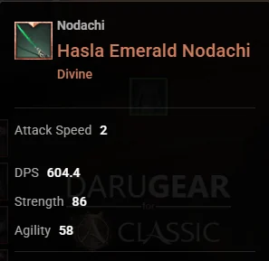
Hasla Emerald Nodachi
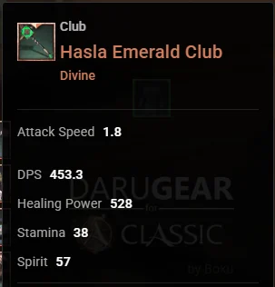
Hasla Emerald Club
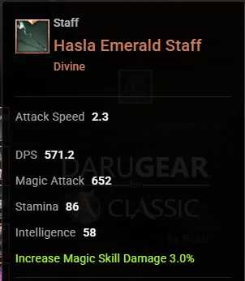
Hasla Emerald Staff
“Catch up” armor
Next step after getting your weapon is getting Mistsong gear.
The most efficient way to get it is by doing Aria's Armor Autograph.
Obtain any GHA gear. It can be plate, leather or cloth, and any piece (chest, legs, pants).
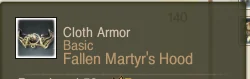
Fallen Martyr's Hood (cloth)
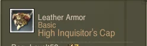
High Inquisitor's Cap (leather)
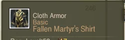
Fallen Martyr's Shirt (cloth)
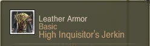
High Inquisitor's Jerkin (leather)
Push them to Celestial with crafting.
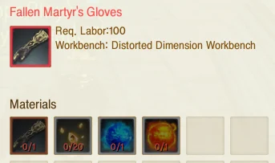
Example: Fallen Martyr's Gloves recipe.
Regrade it to Divine with armor regrade scrolls.
Convert it into an Aria's Armor Autograph.
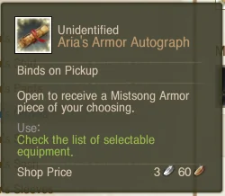
The Autograph will be Divine grade and lets you pick any armor piece from the Mistsong set.
Now it's time to think about gemming those pieces.
Gemming
Ideally you want 2–3× Radiant Lunagems and the rest Lucid.
Why? The first 2 Lunagems are 100% to socket, and Lucids are also 100% to socket, while Radiant can blow up past 2×.
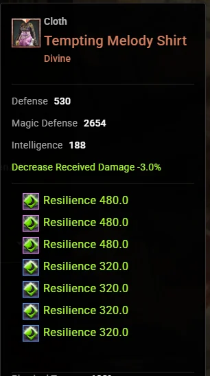
Example piece: Tempting Melody Shirt (Divine).
Skill Builds & Combos
Currently in game there are 5 main classes. They are trying to introduce hybrid classes with Scythe, but right now hybrids don't work outside of solo play and some basic PvE.
You can cast spells during Tigerstrike, which is also important. Depending on the situation I usually do either:
Tigerstrike -> Throw Dagger (before hitting the first enemy) -> Spam Whirlwind while Tigerstriking other enemies
or
Tigerstrike -> Precision Strike
Darkrunner
Small scale
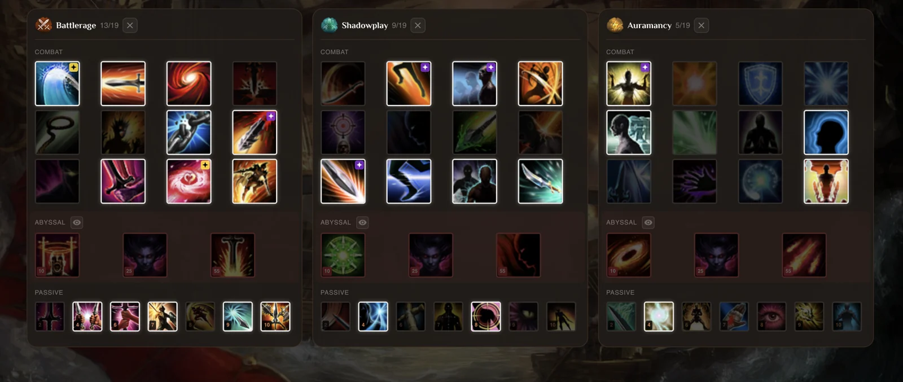
This is basically a Darkrunner build for small scale.
You can swap out Wallop for Stalker's Mark if needed.
You have one extra point. I either put it in Liberation (when fighting archers) or Reckless Charge.
That extra point can also go to Lasso in water. It's OP.
Pin Down is good damage and worth testing, but only because you have the Hasla weapon. Once you gear up you don't need the extra damage.
Tips: ancestral notes
Precision Strike: the default animation is a lot faster. Never change it.
Tigerstrike: Life gives you so much survivability. Always take it over Lightning.
Shadowsmite: has an OP shackle that I believe is only available on the default ancestral.
Overwhelm: the default ancestral has a much faster animation than the others.
Hexwarden
RvR
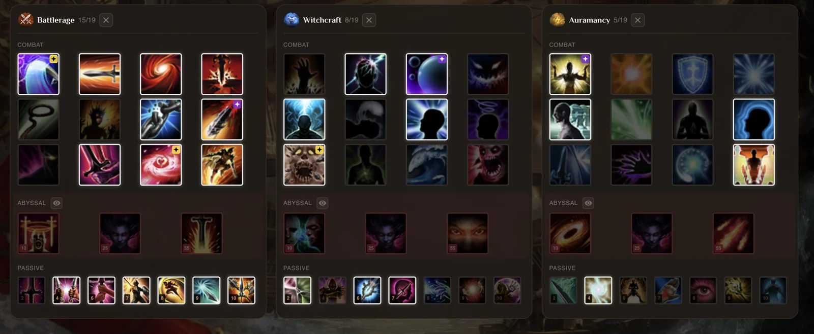
This is an RvR build. The 6th and 7th Witchcraft passives give you so much survivability, especially in low gear, so you don't get popped randomly.
Ancestral notes
Quake Triple Slash scales really well with attack speed. It hurts like hell if you can get off a few attacks on a clump.
Earth Banshee Veil I believe enables you to mass trip with Whirlwind afterwards. (Double check this.)
If it's a heavy mage ball and you can't do anything (you'll just die without killing anyone), swap Reckless Charge out for Mist Protective Wings and essentially be a wings bot for a good tank.
Herald
RvR
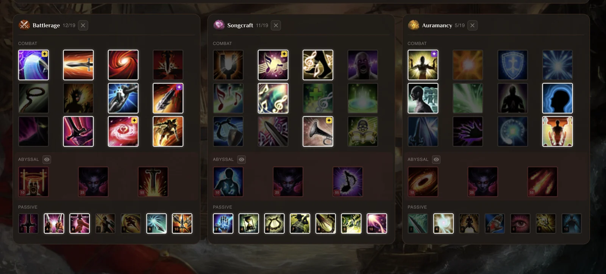
Must-haves:
Ancestral Triple Slash: Quake
Startling Strain: Life
Alarm Call: Sleep
Honestly it's fun to jump on a clump and get 2k honor, but even with my gear that rarely happened and I just died. That's why I think it's plate-playable only.
Mage
Spellsinger
Single-target burst
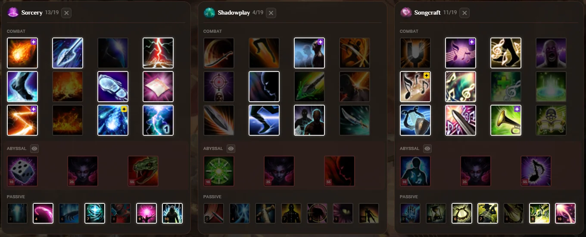
Bread and butter: animation cancel
Using Self Startling Strain → Bloody Chantey is ideal. It's the whole reason this build works.
Everything else plays about the same. You have more mobility and CC breaks compared to Spellsinger. Play around and try things out.
Healer
Cleric
Best all-rounder
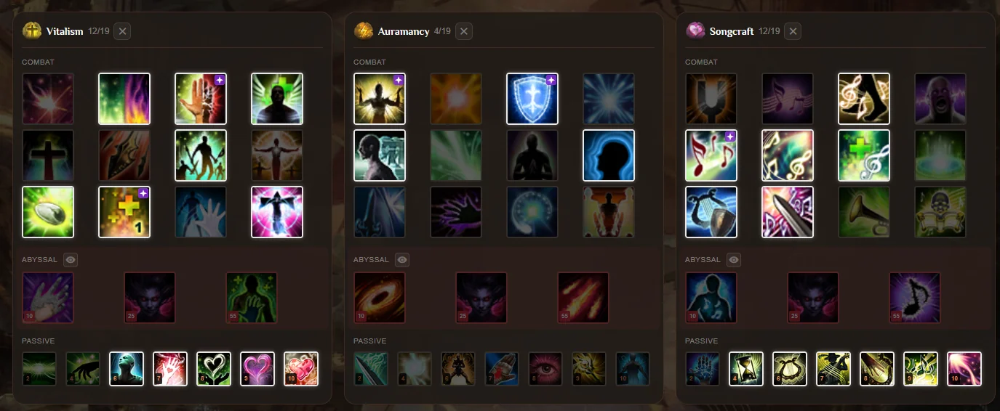
Good all-rounder and probably the most popular healer.
Always try to use Resurgence and Mirror Light before Antithesis.
Use Spell Shield from Auramancy to do an instant Antithesis.
Actively use Mirror Light to help people out of CCs and debuffs.
Always keep Renewal up on tanks.
Keep songs up, always.
Soothsayer
Instant-cast Mend & rezzer
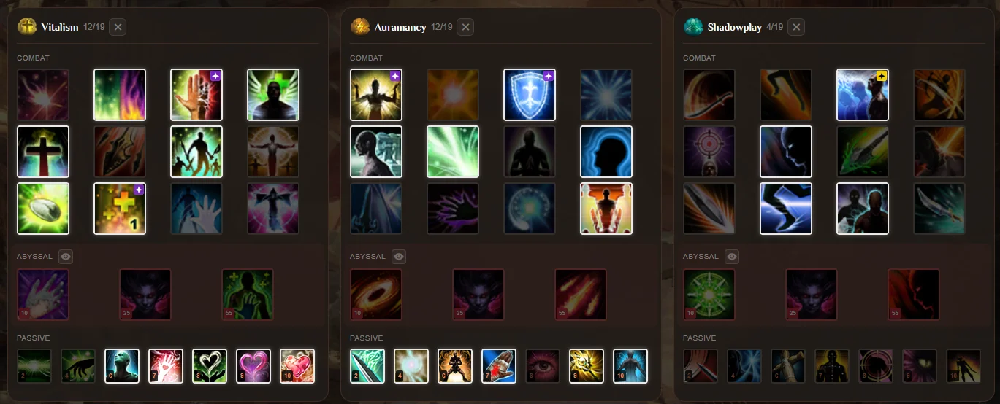
A more mobile build that can also be used as a "rezzer" build.
Same concept as the Cleric build, but without songs.
Use Drop Back (wave version) to cast instant Mends.
Hierophant
CC focused
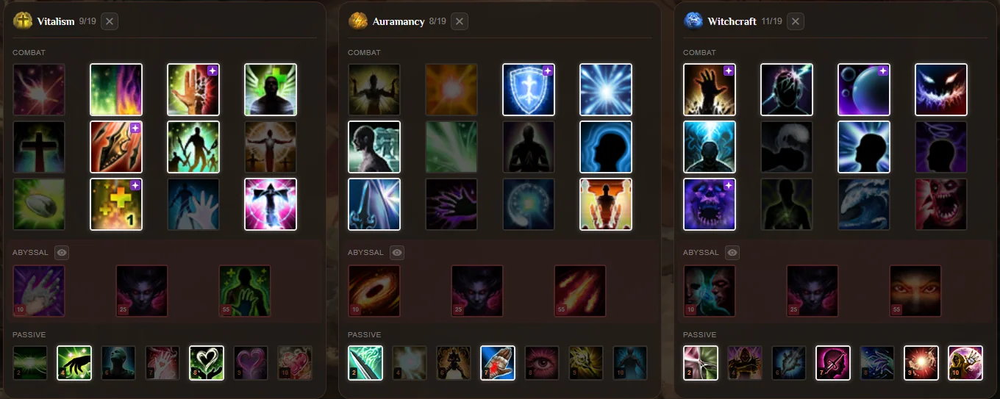
More CC focused. Works for RvR and small scale situations.
Same concept as the rest, but should be tankier thanks to the mitigation passive.
Much more CC, but less healing output.
Archer
Ebonsong
Archer
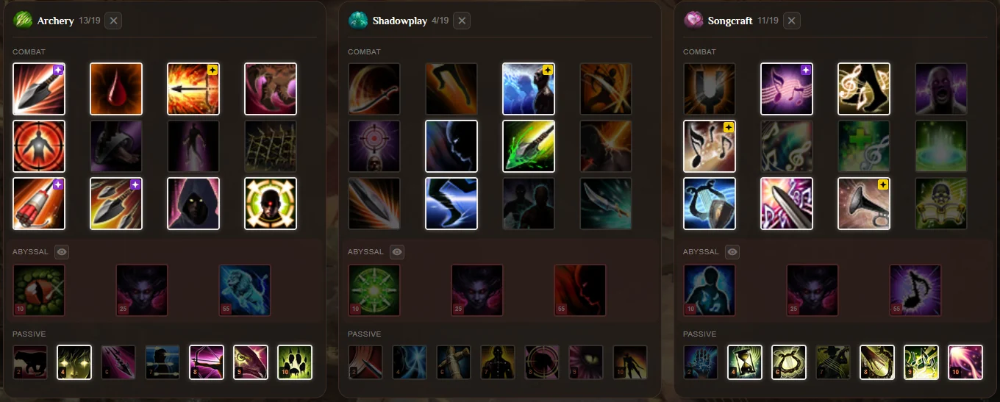
Normal combos
Wave Dropback -> Piercing Shot -> Conc
Double Recurve -> Piercing Shot -> Conc
Endless Arrows
Make sure your target is poisoned as much as possible for extra damage, e.g. with Toxic Shot.
Songcraft
Healing Hymn (Stone) +
Bulwark Ballad: short duration, 50% armor reduction
or Bloody Chantey: 20% skill damage reduction
If you have the Enlightened Necklace with Hollow Deadeye, max Deadeye stacks make Snipe instant cast.
Tank
Skullknight
Frontline engage
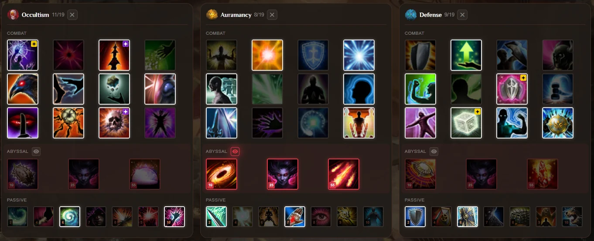
Engage frontline, the super-duper pull-maker deluxe.
Dreambreaker
Bubble tank
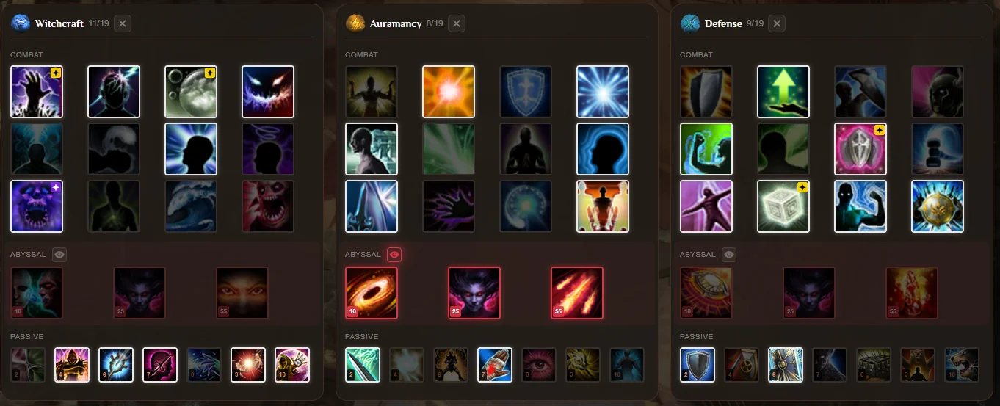
Bubble annoyance with tankiness.
Nightcloak
Backline peeler
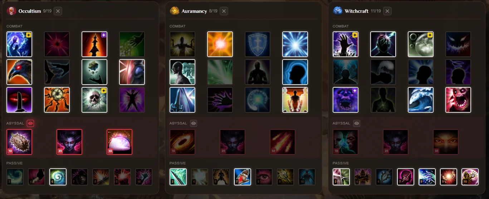
Bubble annoyance without the tankiness, but with instant in-your-face CCs.
BIG IMPORTANT TIP: all these builds are basic. Change them around however you want to fit your style.
Stat migration
There is multiple ways to get your stat migration done
But the newest and most painless way is just to use honor to get the Migration stone
It does -/+ 150 stat migration, and the migration stone is reusable
What stats you take from depends on your class, ask in guild chat or guild discord for help
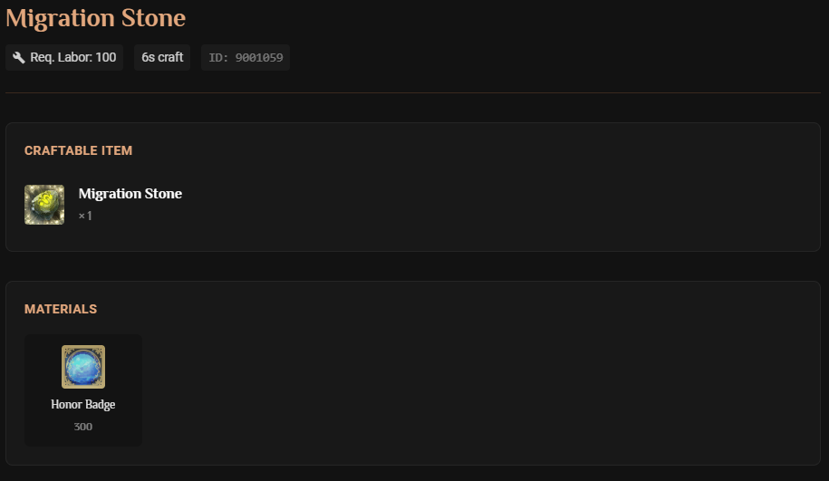
Costume and Undies
Costume you can obtain from Guild shop for 200 prestige
Undergarments you can get from Evenbards. Evenbards spawn to the factions main cities and other locations during the night.
There are also 4 different kind of Undergarments depending what class you play.
Once you obtain undergarments you need to buy also 20 Honor Badges from Honor Shop or do Arenas to get them
For upgrading/syntesising the costume and undies it is recommended to use activity tokens to craft and upgrade the Synthium stones, since they require less mats.
Make sure to follow the spreadsheetstrong> while upgrading them to get the correct stats, dont just upgrade and hope for the best
You can see on the image below when to roll for the stat and when to keep it
Getting your costume and undies done is very imporant, they give huge stat boost but not to gearcore, thats why a lot people don't do them or dont focus on them
Gold Making
Setting up your economy is really important for your long-term progression, and it's mostly what you'll be doing while online.
A few main ways to start making gold quickly without too much investment:
Probably the most efficient option from early game through mid and end game.
On this server fishing gives double gold and costs double labor.
With the starting buff + Dawn's drop you can get to 40k fishing proficiency, which gets you the Expert's Sturdy Rod.
You get a free fishing boat in game and from Homecoming coins.
At 80k you get the Master's Rod, which definitely boosts your fishing speed.
One of the best spots to fish is near Freedich. It's close and the spots aren't far from each other.
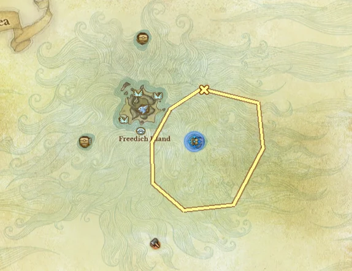
The yellow circle marks the fishing spots; the blue marker is the turn-in.
2 · Larceny
Probably one of the better ways to make gold. It doesn't use much labor, you just have to hit mobs.
Be buffed up as much as you can and kill as many monsters as you can. Pop these buffs in this order:
Assorted Piggle Wiggle -> Jujube Sparkling Wine -> Spellbook: Unstoppable Will -> Dawn of Glory -> Secret Gift -> Vaughn's Energizing Spirits -> Greedy Grimoire -> Mysterious Glittery Charcoal Milk
Aim for at least 1,000 monster kills to start. You can track your gold and kills with the "Your Paystub" addon. Later you can reach 1,400+ monsters per hour and much more depending on your class.
3 · Trade runs
Trade runs are good but require a bit of an investment: a hauler, car, merchant ship and some staging land.
Some trade runs require only a car, some require more. Plan it out, or figure it out. I won't go too deep here because trading deserves a guide of its own.
A proper end game gear goal is a combination of the Ayanad Epic set + Obsidian Epic T7, or Obsidian Epic T7 armor + weapon, depending on your class.
Side Goals
Mounts
Getting decent mounts is pretty important. The easiest ones to get are Kirin, Rajani and Aquestria, or you can buy some of the new tamable mounts from the AH or tame them yourself.
Speaking of activity tokens, make sure to grab the Crystal Wings glider.
Learn more about activity tokens here. The easiest quests to do are:
Diamond Shores PvP (Friday): get 50 kills in Diamond Shores. Watch out for "x ds" in nation chat on Friday.
Fishing quest (Saturday): catch 10 fish. Watch out for "x fish" in nation chat on Saturday.
Good gliders to have
Sloth gliderEzi gliderBloomfang
Don't use up all your tokens. At some point, save them for your costume and undies. Bound Synthium Shards require way less charcoal to upgrade compared to non-bound ones.
Costume and undies are a huge upgrade to both damage increase and survivability. When you get there, ask around in guild chat how to do your costumes properly.